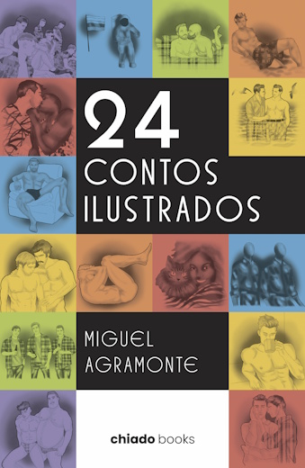
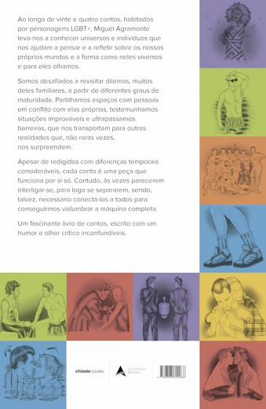

LIVRO
24 Contos Ilustrados
Sinopse
Ao longo de vinte e quatro contos, habitados por personagens LGBT+, Miguel Agramonte leva-nos a conhecer universos e indivíduos que nos ajudam a pensar e a refletir sobre os nossos próprios mundos e a forma como neles vivemos e para eles olhamos.
Somos desafiados a revisitar dilemas, muitos deles familiares, a partir de diferentes graus de maturidade. Partilhamos espaços com pessoas em conflito com elas próprias, testemunhamos situações improváveis e ultrapassamos barreiras, que nos transportam para outras realidades que, não raras vezes, nos surpreendem.
Apesar de redigidos com diferenças temporais consideráveis, cada conto é uma peça que funciona por si só. Contudo, às vezes parecerem interligar-se, para logo se separarem, sendo, talvez, necessário conectá-los a todos para conseguirmos vislumbrar a máquina completa.
Um fascinante livro de contos, escrito com um humor e olhar crítico inconfundíveis.
Prefácio
Muitos partem de encadeamento de acontecimentos, de uma história com uma cronologia mais ou menos forçada. Miguel Agramonte parte, muitas vezes, de uma pessoa, de um gesto, de uma conversa ou de uma coisa aparentemente insignificante.
O que poderá destruir uma simples notificação? Até onde pode levar um gelado? O que fica de alguém quando a pessoa já partiu? Quantos quilómetros são realmente muitos quando duas pessoas se querem? Pode alguém esconder-se dos outros durante tanto tempo que acabe escondido de si próprio? E quanto sabemos realmente de uma pessoa depois de a observar durante alguns minutos?
As respostas, se existirem, estão nos contos seguintes. E talvez algumas não sejam aquelas que esperávamos. Observamos com ele. Observamos muito. A imagem forma-se facilmente diante de nós. Imaginamos vidas, intenções, nacionalidades, desejos, defeitos e segredos. A película surge e cada frase acrescenta um frame. Antecipamos. Por vezes acertamos, outras enganamo-nos redondamente. E a história acontece.
A lente foca uma toalha que ainda cheira a alguém. Um rapaz observado em tempo real numa piscina. Uma casa de banho. Uma chamada da mãe. Uma gaivota, uma pomba ou uma chávena de tisana. E a história desenrola-se.
Como será ler contos como quem os conta? Há uma relação direta com o leitor, uma cumplicidade. Os comentários surgem, provocam, interrompem. Por vezes, quem os conta parece divertir-se com o facto de sabermos exatamente aquilo que ele queria que pensássemos.
Isso percebe-se também na estrutura. Os contos avançam como tantas vezes contamos episódios aos amigos. Começamos em A, passamos inexplicavelmente por C, D e E e, se tudo correr bem, acabamos por chegar a B. Pelo caminho falamos de amor, sexo, família, preconceito, aplicações de encontros, comida, viagens ou qualquer outro assunto que julgávamos não ter nada a ver com o ponto de partida, até percebermos que tinha. Que talvez faltasse precisamente aquele desvio para chegarmos àquela história.
Descobrimos com o Miguel que há sempre qualquer coisa para lá da fronteira de cada conceito. O desejo não vale por si só, há ciúme no desejo. E no ciúme também pode haver solidão. Na solidão também há sexo. No sexo há preconceito. No preconceito também há perda. Na perda também pode haver fetiches, e nestes ternura. E algumas situações que provavelmente ninguém gostaria de explicar em voz alta a quem estivesse a espreitar a página ao lado, por muito que nos inteiremos extasiados destas descobertas.
Os atores, muitas vezes LGBT, não existem apenas para representar uma orientação sexual. Vivem. São personagens generosas ou egoístas, inteligentes ou ingénuas, sensíveis ou irritantes. Amam bem ou mal. Traem, são traídas, fazem disparates e tomam decisões absolutamente incompreensíveis. Têm direito ao ridículo. São gente. Os corpos têm cheiro, textura e temperatura. Transpiram, envelhecem, engordam, excitam-se. São humanos. São desejados, rejeitados, escondidos ou descobertos. Também eles contam a história.
E o sexo? Por vezes é amor, outras desejo, outras é sexo. É a vida.
Talvez seja essa a melhor forma de entrar nestes contos: sem procurar antecipadamente uma moral, uma explicação ou sequer um destino.
Por isso, agradeço ao Miguel o convite que me fez para escrever este prefácio. E ao assistir a este livro, se me permitirem a expressão, há apenas uma recomendação que me atrevo a deixar: façam como eu, encostem-se no sofá e apreciem. De certeza que vão assistir às várias películas com muito prazer. Quanto à fotografia, deixem-na nas mãos do autor. Afinal, Miguel Agramonte é um realizador de textos.

Onde comprar
Este livro pode ser adquirido: